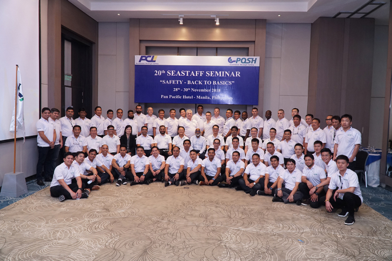
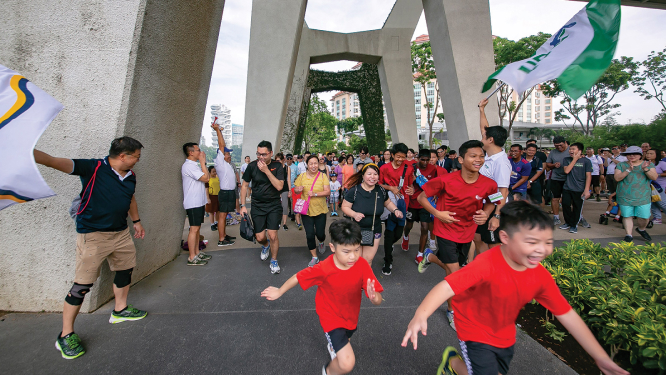
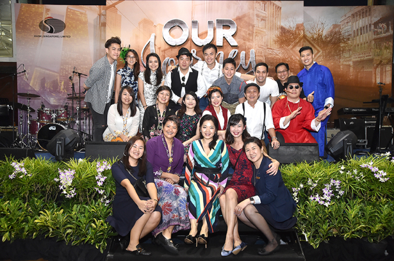

Annual Report 2018
about us
Annual Report 2018
about us
© 2019 Copyright. All rights reserved. PACC OFFSHORE Services Holding Ltd
DOWNLOAD FULL REPORT REQUEST FOR PRINT COPYPOSH has in place an established, holistic approach to Health, Safety, Environment and Quality (HSEQ) across our operations. Our safety vision is embedded in our motto “Excellence through Safety”. This vision of Zero Harm is a journey, and initiatives are put in place each year to support our ambition. Our current safety statistics, which are better than industry benchmarks, indicate that these efforts are having an impact.
| Performance Indicators (Based on 1 million man hours) |
Actual FY2018 |
2018 Target |
|---|---|---|
| Lost Time Injury Frequency | 0.21 | <0.5 |
| Injury Rate | 0.42 | <1.0 |
Our dedicated HSE team implements regular initiatives to enforce a strong safety culture in a growing family of seafarers and shore based staff. Not less than four safety campaigns are carried out annually targeting specific areas to improve our safety culture, and culminates in the Annual POSH Safety Day, where all staff commit to the Safety Pledge to uphold the vision of Zero Harm and the Company’s 10 Golden Rules of Safety.
We are pleased that clients recognise our high standards of service and safety quality. During the year, both POSH Arcadia and POSH Xanadu completed their respective charters for the Shell Prelude and Chevron Big Foot projects with zero Lost Time Injury (“LTI”) and near 100% gangway uptime. Collectively, both vessels completed close to 2,000 incident-free helicopter operations and the project teams received strong commendations from our clients. In particular, POSH Arcadia was named HSE Contractor of the Month by the Shell Prelude Site Safety Leadership team in July 2018. As part of the recognition, Shell donated A$15,000 to the cancer council in POSH’s name and POSH donated a matching sum to the Wirrpanda Foundation and Clontarf Foundation. Both foundations aim to uplift the quality of life for aboriginal and Torres Straits Islanders through support for education and life skills training.
To ensure that our crew have the right competencies and skillsets to fulfil the job requirements, we continue to implement a comprehensive training curriculum in 2018:
• Select candidates from our POSH Cadetship Training Programme are offered internships with our ship management functions during the periods that they are not working aboard the ships. The internships aim to familiarise them with shore processes, and prepare them for eventual transition to onshore jobs.
• All senior officers undergo a rigorous Command Assessment Programme before being approved for promotion.
• To keep our crew up-to-date with the evolving requirements of our clients and operating environment, our vessels are equipped with computer based training programs onboard. This is an effective mode of enhancing and upgrading the skills and knowledge of our marine officers and crew during their stint of work onboard.
• Seastaff seminars are held regularly in Manila and Jakarta where further technical training is provided. Training content also places emphasis on company culture and values. Prior to joining ship, our crew attend refresher courses on personal safety as well as briefings on operational matters.
As part of the larger Kuok (Singapore) Limited (“KSL”) Group, we are able to tap on the extensive training platforms across the KSL Group for the development of our shore staff:
• Dedicated LinkedIn Learning accounts are set up for junior to mid-level talents. Users have access to e-modules that are relevant to their work on the go, making the learning process easy and convenient.
• The in-house training programme for middle managers aims to equip people managers with the essential skillsets to lead their teams effectively. We work closely with business schools including INSEAD and Singapore Management University (“SMU”) to identify suitable executive programmes for members of Senior Management.
• In 2018, we organised two Learning Festivals which saw various business units across the KSL Group showcasing their business portfolio. The festivals allowed people to gain a greater understanding of the businesses within the KSL Group and facilitated conversations on the sharing of best practices.
• With the theme “Stepping Ahead to 2030”, the KSL Group Leadership Forum explored how digitalisation and automation could disrupt the way we work and run our business. During the breakout sessions, our leaders also engaged in discussions on how we could better deploy technology to capture the next wave of growth for our businesses.
At POSH, we believe that every employee should feel a deep sense of belonging not just to the company but also the broader community.
In November 2018, we held our annual Charity Walk at Gardens by the Bay East in conjunction with our sister company Pacific Carriers Limited (“PCL”). The event brought together employees and their family members, as well as friends from our charity partners – SUN-DAC and CARE SG. Themed “Walk and Play for Charity 2018”, the event aimed to create a platform for all participants to interact meaningfully and have fun together.
More than S$150,000 was raised in support of SUN-DAC and Care SG, which serves clients between the ages of 16 and 60 years old with varying intellectual, physical, mental, sensory and learning disabilities, and supports youth at-risk respectively.
As with our tradition over the last 10 years, POSH handed out bursaries to deserving children of our junior seafaring colleagues in Manila and Jakarta to assist them with expenses and fees for attending primary, secondary and university education.
  